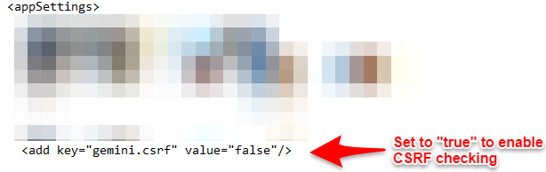

Note This setting only exists in Gemini 7.2 or later versions. If you do not find the setting in the web.config, you do not have this functionality and must upgrade
Gemini's web.config already contains the setting for CSRF. By default it is set to false. To enable CSRF checking, search for the word "CSRF", set it to "true", and recycle the App Pool in IIS
